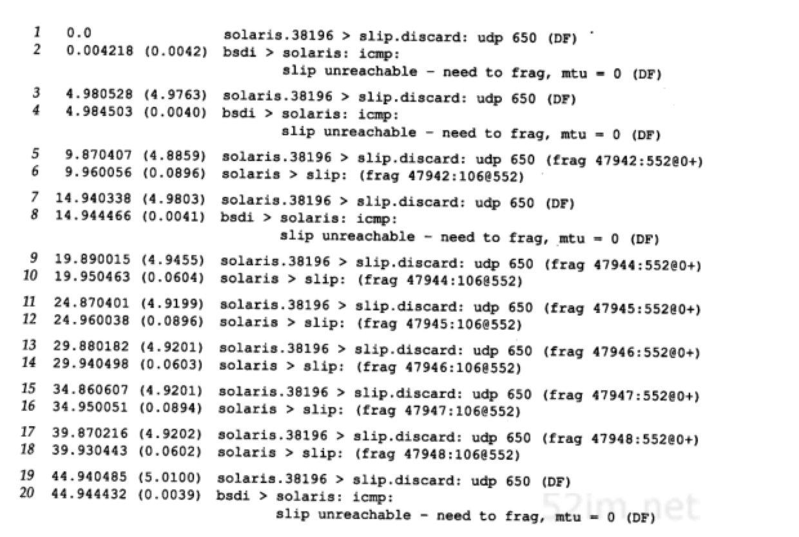

UDP：用户数据报协议
Table of Contents
UDP是一个简单的面向数据报的运输层协议：进程的每个输出操作都正好产生一个UDP数据报，并组装成一份待发送的IP数据报。这与面向流字符的协议不同，如TCP，应用程序产生的全体数据与真正发送的单个IP数据报可能没有什么联系
UDP数据报封装成一份IP数据报的格式如图11-1所示：
UDP不提供 可靠性 ：它把应用程序传给IP层的数据发送出去，但是并不保证它们能到达目的地。由于缺乏可靠性，似乎觉得要避免使用UDP而使用一种可靠协议如TCP
应用程序必须关心IP数据报的长度。如果它超过网络的MTU，那么就要对IP数据报进行分片。如果需要，源端到目的端之间的每个网络都要进行分片，并不只是发送端主机连接第一个网络才这样做，本章也将讨论IP分片机制
UDP报文
UDP首部
UDP首部的各字段如图11-2所示：
- 端口号：标识发送进程和接收进程。由于IP层已经把IP数据报分配给TCP或UDP（根据IP首部中协议字段值），因此TCP端口号由TCP来查看，而UDP端口号由UDP来查看。TCP端口号与UDP端口号是相互独立的
尽管相互独立，如果TCP和UDP同时提供某种知名服务，两个协议通常选择相同的端口号。这纯粹是为了使用方便，而不是协议本身的要求 - UDP长度字段：UDP首部和UDP数据的字节长度。该字段的最小值为8字节（发送一份0字节的UDP数据报是OK）。事实上这个UDP长度是冗余的。IP数据报长度指的是数据报全长，因此UDP数据报长度是全长减去IP首部的长度（该值在IP首部长度字段中指定）
UDP检验和
UDP检验和覆盖UDP首部和UDP数据。回想IP首部的检验和，它只覆盖IP的首部，并不覆盖IP数据报中的任何数据。
UDP和TCP在首部中都有覆盖它们首部和数据的检验和。UDP的检验和是可选的，而TCP的检验和是必需的
尽管UDP检验和的基本计算方法与以前描述的IP首部检验和计算方法相类似（16bit字的二进制反码和），但是它们之间存在不同的地方：
- UDP数据报的长度可以为奇数字节，但是检验和算法是把若干个16bit字相加。解决方法是必要时在最后增加填充字节0，这只是为了检验和的计算（这意味着可能增加的填充字节不被传送）
- UDP数据报和TCP段都包含一个12字节长的伪首部，它是为了计算检验和而设置的。伪首部包含IP首部一些字段。其目的是让UDP两次检查数据是否已经正确到达目的地（例如，IP没有接受地址不是本主机的数据报，以及IP没有把应传给另一高层的数据报传给UDP）。UDP数据报中的伪首部格式如图11-3所示：
在该图中，特地举了一个奇数长度的数据报例子，因而在计算检验和时需要加上填充字节。注意，UDP数据报的长度在检验和计算过程中出现两次
如果检验和的计算结果为0，则存入的值为全1（65535），这在二进制反码计算中是等效的。如果传送的检验和为0，说明发送端没有计算检验和
如果发送端没有计算检验和而接收端检测到检验和有差错，那么UDP数据报就要被悄悄地丢弃。不产生任何差错报文
UDP检验和是一个端到端的检验和。它由发送端计算，然后由接收端验证。其目的是为了发现UDP首部和数据在发送端到接收端之间发生的任何改动
尽管UDP检验和是可选的，但是它们应该总是在用。在80年代，一些计算机产商在默认条件下关闭UDP检验和的功能，以提高使用UDP协议的NFS（Network File System）的速度。在单个局域网中这可能是可以接受的，但是在数据报通过路由器时，通过对链路层数据帧进行循环冗余检验（如以太网或令牌环数据帧）可以检测到大多数的差错，导致传输失败。不管相信与否，路由器中也存在软件和硬件差错，以致于修改数据报中的数据。如果关闭端到端的UDP检验和功能，那么这些差错在UDP数据报中就不能被检测出来。另外，一些数据链路层协议（如SLIP）没有任何形式的数据链路检验和
tcpdump输出
很难知道某个特定系统是否打开了UDP检验和选项。应用程序通常不可能得到接收到的UDP首部中的检验和。为了得到这一点，我们在tcpdump程序中增加了一个选项，以打印出接收到的UDP检验和。如果打印出的值为0，说明发送端没有计算检验和
测试网络上三个不同系统的输出如图11-4所示。运行自编的sock程序，发送一份包含9个字节数据的UDP数据报给标准回显服务器：
从这里可以看出，三个系统中有两个打开了UDP检验和选项
还要注意的是，在这个简单例子中，送出的数据报与收到的数据报具有相同的检验和值（第3和第4行，第5和第6行）。从图11-3可以看出，两个IP地址进行了交换，正如两个端口号一样。伪首部和UDP首部中的其他字段都是相同的，就像数据回显一样。这再次表明UDP检验和（事实上，TCP/IP协议簇中所有的检验和）是简单的16bit和。它们检测不出交换两个16bit的差错
统计结果
文献[Mogul 1992]提供了在一个繁忙的NFS服务器上所发生的不同检验和差错的统计结果，时间持续了40天。统计数字结果如图11-5所示：
| 层次 | 校验和差错数 | 近似总分组数 |
| 以太网 | 446 | 170000000 |
| IP | 14 | 170000000 |
| UDP | 5 | 140000000 |
| TCP | 350 | 30000000 |
最后一列是每一行的大概总数，因为太网和IP层还使用其他的协议。例如，不是所有的以太网数据帧都是IP数据报，至少以太网还要使用ARP协议。不是所有的IP数据报都是UDP或TCP数据，因为ICMP也用IP传送数据
注意：TCP发生检验和差错的比例与UDP相比要高得多。这很可能是因为在该系统中的TCP连接经常是“远程”连接（经过许多路由器和网桥等中间设备），而UDP一般为本地通信
从最后一行可以看出，不要完全相信数据链路（如以太网，令牌环等）的CRC检验。应该始终打开端到端的检验和功能。而且，如果你的数据很有价值，也不要完全相信UDP或TCP的检验和，因为这些都只是简单的检验和，不能检测出所有可能发生的差错
示例
用我们自己编写的sock程序生成一些可以通过tcpdump观察的UDP数据报：
bsdi $ sock -v -u -i -n4 svr4 discard
connected on 140.252.13.35.1108 to 140.252.13.34.9
第1次执行这个程序时，指定verbose模式(-v)来观察ephemeral端口号，指定UDP(-u)而不是默认的TCP，并且指定源模式(-i)来发送数据，而不是读写标准的输入和输出。-n4选项指明输出4份数据报（默认条件下为1024），目的主机为svr4。discard丢弃服务。每次写操作的输出长度取默认值1024
bsdi $ sock -v -u -i -n4 -w0 svr4 discard
connected on 140.252.13.35.1110 to 140.252.13.34.9
第2次运行该程序时我们指定-w0，意思是写长度为0的数据报。两个命令的tcpdump输出结果如图11-6所示：
- 输出显示有四份1024字节的数据报，接着有四份长度为0的数据报。每份数据报间隔几毫秒
- 在发送第1份数据报之前，发送端和接收端之间没有任何通信（TCP在发送数据的第1个字节之前必须与另一端建立连接）。另外，当收到数据时，接收端没有任何确认。在这个例子中，发送端并不知道另一端是否已经收到这些数据报
- 最后要指出的是，每次运行程序时，源端的UDP端口号都发生变化。第一次是1108，然后是1110。客户程序使用ephemeral端口号一般在1024～5000之间，正如现在看到的这样
IP分片
正如以前描述的那样，物理网络层一般要限制每次发送数据帧的最大长度。任何时候IP层接收到一份要发送的IP数据报时，它要判断向本地哪个接口发送数据（选路），并查询该接口获得其MTU。IP把MTU与数据报长度进行比较，如果需要则进行分片。分片可以发生在原始发送端主机上，也可以发生在中间路由器上
把一份IP数据报分片以后，只有到达目的地才进行重新组装（这里的重新组装与其他网络协议不同，它们要求在下一站就进行进行重新组装，而不是在最终的目的地）。重新组装由目的端的IP层来完成，其目的是使分片和重新组装过程对运输层（TCP和UDP）是透明的，除了某些可能的越级操作外。已经分片过的数据报有可能会再次进行分片（可能不止一次）。IP首部中包含的数据为分片和重新组装提供了足够的信息
尽管IP分片过程看起来是透明的，但有一点让人不想使用它：即使只丢失一片数据也要重传整个数据报。因为IP层本身没有超时重传的机制（由更高层来负责超时和重传，TCP有超时和重传机制，但UDP没有。一些UDP应用程序本身也执行超时和重传）。当来自TCP报文段的某一片丢失后，TCP在超时后会重发整个TCP报文段，该报文段对应于一份IP数据报。没有办法只重传数据报中的一个数据报片。事实上，如果对数据报分片的是中间路由器，而不是起始端系统，那么起始端系统就无法知道数据报是如何被分片的。因此经常要避免分片
分片字段
回忆IP首部，下面这些字段用于分片过程：
- 标识字段：对于发送端发送的每份IP数据报来说，其标识字段都包含一个唯一值。该值在数据报分片时被复制到每个片中
- 标志字段：
- 一个比特来表示“更多的片”。除了最后一片外，其他每个组成数据报的片都要把该比特置1
- 一个比特称作“不分片”位。如果将这一比特置1，IP将不对数据报进行分片。相反把数据报丢弃并发送一个ICMP差错报文（“需要进行分片但设置了不分片比特”）给起始端
- 片偏移字段：该片偏移原始数据报开始处的位置。另外，当数据报被分片后，每个片的总长度值要改为该片的长度值
当IP数据报被分片后，每一片都成为一个分组，具有自己的IP首部，并在选择路由时与其他分组独立。这样，当数据报的这些片到达目的端时有可能会失序，但是在IP首部中有足够的信息让接收端能正确组装这些数据报片
分片实例
使用UDP很容易导致IP分片（TCP试图避免分片，但对于应用程序来说几乎不可能强迫TCP发送一个需要进行分片的长报文段）。我们可以用sock程序来增加数据报的长度，直到分片发生。在一个以太网上，数据帧的最大长度是1500字节，其中1472字节留给数据，假定IP首部为20字节，UDP首部为8字节。我们分别以数据长度为1471,1472,1473和1474字节运行sock程序。最后两次应该发生分片：
bsdi $ sock -u -i -nl -w1471 svr4 discard bsdi $ sock -u -i -nl -w1472 svr4 discard bsdi $ sock -u -i -nl -w1473 svr4 discard bsdi $ sock -u -i -nl -w1474 svr4 discard
相应的tcpdump输出如下图所示：
前两份UDP数据报（第1行和第2行）能装入以太网数据帧，没有被分片。但是对应于写1473字节的IP数据报长度为1501，就必须进行分片（第3行和第4行）。同理，写1474字节产生的数据报长度为1502，它也需要进行分片（第5行和第6行）
当IP数据报被分片后，tcpdump打印出其他的信息：
- frag26304（第3行和第4行）和frag26313（第5行和第6行）指的是IP首部中标识字段的值
- 分片信息中的下一个数字，即第3行中位于冒号和@号之间的1480，是除IP首部外的片长。两份数据报第一片的长度均为1480：UDP首部占8字节，用户数据占1472字节（加上IP首部的20字节分组长度正好为1500字节）。第1份数据报的第2片（第4行）只包含1字节数据(剩下的用户数据)。第2份数据报的第2片（第6行）包含剩下的2字节用户数据
- 在分片时，除最后一片外，其他每一片中的数据部分（除IP首部外的其余部分）必须是8字节的整数倍，本例中1480是8的整数倍
- 位于@符号后的数字是从数据报开始处计算的片偏移值。两份数据报第1片的偏移值均为0(第3行和第5行)，第2片的偏移值为1480（第4行和第6行）。跟在偏移值后面的加号对应于IP首部中3bit标志字段中的“更多片”比特。设置这一比特的目的是让接收端知道在什么时候完成所有的分片组装
- 注意第4行和第6行（不是第1片）省略了协议名（UDP）、源端口号和目的端口号。协议名是可以打印出来的，因为它在IP首部并被复制到各个片中。但是， 端口号 在UDP首部，只能在第1片中被发现
发送的第3份数据报（用户数据为1473字节）分片情况如图11-8所示：需要重申的是， 任何运输层(UDP/TCP)首部 只出现在第1片数据中：
IP数据报是指IP层端到端的传输单元（在分片之前和重新组装之后），分组是指在IP层和链路层之间传送的数据单元。一个分组可以是一个完整的IP数据报，也可以是IP数据报的一个分片
ICMP不可达差错（需要分片）
发生ICMP不可达差错的另一种情况是，当路由器收到一份需要分片的数据报，而在IP首部又设置了不分片（DF）的标志比特。如果某个程序需要判断到达目的端的路途中最小MTU是多少（路径MTU发现机制），那么这个差错就可以被该程序使用
这种情况下的ICMP不可达差错报文格式如图11-9所示，这里的格式与图6-10不同，因为在第2个32bit字中，16~31bit可以提供下一站的MTU，而不再是0：
如果路由器没有提供这种新的ICMP差错报文格式，那么下一站的MTU就设为0
实例
ICMP差错试图判断从路由器netb到主机sun之间的拨号SLIP链路的MTU。我们知道从sun到netb的链路的MTU：当SLIP被安装到主机sun时，这是SLIP配置过程中的一部分。以前已经通过netstat命令观察过。现在，我们想从另一个方向来判断它的MTU。在点到点的链路中，不要求两个方向的MTU为相同值
从主机solaris上运行ping程序到主机bsdi，增加数据分组长度，直到看见进入的分组被分片为止。如图11-10所示：
在主机sun上运行tcpdump，观察SLIP链路，看什么时候发生分片。开始没有观察到分片，一切都很正常直到ping分组的数据长度从500增加到600字节。可以看到接收到的回显请求（仍然没有分片），但不见回显应答
为了跟踪下去，也在主机bsdi上运行tcpdump，观察它接收和发送的报文。输出如图11-11所示：
- 每行中的标记（DF）说明在IP首部中设置了不分片比特。这意味着Solaris 2.2一般把不分片比特置1，作为实现路径MTU发现机制的一部分
- 第1行显示的是回显请求通过路由器netb到达sun主机，没有进行分片，并设置了DF比特，因此可以知道还没有达到netb的SLIP MTU
- 在第2行注意到DF标志被复制到回显应答报文中。这就带来了问题。回显应答与回显请求报文长度相同（超过600字节），但是sun外出的SLIP接口MTU为552。因此回显应答需要进行分片，但是DF标志比特又被设置了。这样，sun就产生一个ICMP不可达差错报文返回给bsdi（报文在bsdi处被丢弃）
这就是我们在主机solaris上没有看到任何回显应答的原因。这些应答永远不能通过sun。分组的路径如图11-12所示：
MTU发现
用Traceroute确定路径MTU
尽管大多数的系统不支持路径MTU发现功能，但可以很容易地修改traceroute程序，用它来确定路径MTU。要做的是发送分组，并设置“不分片”标志比特。发送的第一个分组的长度正好与出口MTU相等，每次收到ICMP 不能分片 差错时就减小分组的长度。如果路由器发送的ICMP差错报文是新格式，包含出口的MTU，那么就用该MTU值来发送，否则就用下一个最小的MTU值来发送。正如RFC 1191声明的那样，MTU值的个数是有限的，因此在我们的程序中有一些由近似值构成的表，取下一个最小MTU值来发送
首先，尝试判断从主机sun到主机slip的路径MTU，知道SLIP链路的MTU为296：
例子中，路由器bsdi没有在ICMP差错报文中返回出口MTU，因此我们选择另一个MTU近似值。TTL为2的第1行输出打印的主机名为bsdi，但这是因为它是返回ICMP差错报文的路由器。TTL为2的最后一行正是要找的
在bsdi上修改ICMP代码使它返回出口MTU值并不困难，如果那样做并再次运行该程序，得到如下输出结果：
这样在找到正确的MTU值之前，不用逐个尝试8个不同的MTU值（路由器返回了正确的MTU值）
采用UDP的路径MTU发现
由于我们所使用的支持路径MTU发现机制的唯一系统就是Solaris 2.x，因此，将采用它作为源站发送一份650字节数据报经slip。由于slip主机位于MTU为296的SLIP链路后，因此，任何长于268字节（296－20－8）且 不分片比特 置为1的UDP数据都会使bsdi路由器产生ICMP 不能分片 差错报文。图11-13给出了拓扑结构和MTU：
用下面的命令行来产生650字节UDP数据报，每两个UDP数据报之间的间隔是5秒：
solaris $ sock -u -i -n10 -w650 -p5 slip discard
在运行这个例子时，将bsdi设置成在ICMP 不能分片 差错中，不返回下一跳MTU信息。下图是tcpdump的输出结果：

在发送的第一个数据报中将DF比特置1（第1行），其结果是从bsdi路由器发回我们可以猜测的结果（第2行）。令人不解的是，发送一个DF比特置1的数据报（第3行），其结果是同样的ICMP差错（第4行）。我们预计这个数据报在发送时应该将DF比特置0
第5行结果显示，IP已经知道了发往该目的地址的数据报不能将DF比特置1，因此，IP进而将数据报在源站主机上进行分片。这与前面的例子中，IP发送经过UDP的数据报，允许具有较小MTU的路由器（在本例中是bsdi）对它进行分片的情况不一样。由于ICMP“不能分片”报文并没有指出下一跳的MTU，因此，看来IP猜测MTU为576就行了。第一次分片（第5行）包含544字节的UDP数据、8字节UDP首部以及20字节IP首部，因此，总IP数据报长度是572字节。第2次分片（第6行）包含剩余的106字节UDP数据和20字节IP首部
不幸的是，第7行的下一个数据报将其DF比特置1，因此bsdi将它丢弃并返回ICMP差错。这时发生了IP定时器超时，通知IP查看是不是因为路径MTU增大了而将DF比特再一次置1。我们可以从第19行和20行看出这个结果。将第7行与19行进行比较，可以看出IP每过30秒就将DF比特置1，以查看路径MTU是否增大了
这个30秒的定时器值看来太短。RFC11 91建议其值取10分钟。可以通过修改ip_ire_pathmtu_interval（E.4节）参数来改变该值。同时，Solaris 2.2无法对单个UDP应用或所有UDP应用关闭该路径MTU发现。只能通过修改ip_path_mtu_discovery参数，在系统一级开放或关闭它。正如在这个例子里所能看到的那样，如果允许路径MTU发现，那么当UDP应用程序写入可能被分片数据报时，该数据报将被丢弃
solaris的IP层所假设的最大数据报长度（576字节）是不正确的。在图11-13中，我们看到，实际的MTU值是296字节。这意味着经solaris分片的数据报还将被bsdi分片。图11-15给出了在目的主机（slip）上所收集到的tcpdump对于第一个到达数据报的输出结果（图11-14的第5行和第6行）
因此solaris不应该对外出数据报分片，它应该将DF比特置0，让具有最小MTU的路由器来完成分片工作
现在我们对路由器bsdi进行修改使其在ICMP“不能分片”差错中返回下一跳MTU。图11-16给出了tcpdump输出结果的前6行：
与图11-14一样，前两个数据报同样是将DF比特置1后发送出去的。但是在知道了下一跳MTU后，只产生了3个数据报片，而图11-15中的bsdi路由器则产生了4个数据报片
UDP和ARP之间的交互作用
使用UDP，可以看到UDP与ARP典型实现之间的有趣的交互作用。我们用sock程序来产生一个包含8192字节数据的UDP数据报。预测这将会在以太网上产生6个数据报片。同时也确保在运行该程序前，ARP缓存是清空的，这样，在发送第一个数据报片前必须交换ARP请求和应答：
bsdi $ arp -a #验证ARP高速缓存是空的 bsdi $ sock -u -i -nl -w8192 svr4 discard
在接收到ARP回答前，其余数据报片是否已经做好了发送准备？如果是这样，那么在ARP等待应答时，它会如何处理发往给定目的的多个报文？图11-17给出了tcpdump的输出结果：

- 在第一个ARP应答返回以前，总共产生了6个ARP请求。其原因是IP很快地产生了6个数据报片，而每个数据报片都引发了一个ARP请求
- 在接收到第一个ARP应答时（第7行），只发送最后一个数据报片（第9行）！看来似乎将前5个数据报片全都丢弃了。实际上，这是ARP的正常操作。在大多数的实现中，在等待一个ARP应答时，只将最后一个报文发送给特定目的主机
Host Requirements RFC要求实现中必须防止这种类型的ARP洪泛。建议最高速率是每秒一次。而这里却在4.3ms内发出了6个ARP请求
- 在最后一个ARP应答返回后，继续运行tcpdump程序5分钟，svr4并没有发送ICMP 组装超时 差错，在第一个数据报片出现时，IP层必须启动一个定时器。这里“第一个”表示给定数据报的第一个到达数据报片，而不是第一个数据报片（数据报片偏移为0）。正常的定时器值为30或60秒。如果定时器超时而该数据报的所有数据报片未能全部到达，那么将这些数据报片丢弃。如果不这么做，那些永远不会到达的数据报片迟早会引起接收端缓存满。没出现ICMP差错的原因有两个：
- 大多数从Berkeley派生的实现从不产生该差错！这些实现会设置定时器，也会在定时器溢出时将数据报片丢弃，但是不生成ICMP差错
- 并未接收到包含UDP首部的偏移量为0的第一个数据报片（这是被ARP所丢弃的5个报文的第1个）。除非接收到第一个数据报片，否则并不要求任何实现产生ICMP差错。其原因是因为没有运输层首部，ICMP差错的接收者无法区分出是哪个进程所发送的数据报被丢弃。这里假设上层（TCP或使用UDP的应用程序）最终会超时并重传
尽管本例看来不太可能，但它确实经常发生。NFS发送的UDP数据报长度超过8192字节。在以太网上，这些数据报以我们所指出的方式进行分片，如果适当的ARP缓存入口发生超时，那么就可以看到这里所显示的现象。NFS将超时并重传，但是由于ARP的有限队列，第一个IP数据报仍可能被丢弃
最大UDP数据报长度
理论上，IP数据报的最大长度是65535字节，这是由IP首部16比特总长度字段所限制的。去除20字节的IP首部和8个字节的UDP首部，UDP数据报中用户数据的最长长度为65507字节。但是，大多数实现所提供的长度比这个最大值要小
存在两个限制因素：
- 应用程序可能会受到其程序接口的限制。socket API提供了一个可供应用程序调用的函数，以设置接收和发送缓存的长度。对于UDP socket，这个长度与应用程序可以读写的最大UDP数据报的长度直接相关。现在的大部分系统都默认提供了可读写大于8192字节的UDP数据报
- 限制来自于TCP/IP的内核实现。可能存在一些实现特性（或差错），使IP数据报长度小于65535字节
主机必须能够接收最短为576字节的IP数据报。在许多UDP应用程序的设计中，其应用程序数据被限制成512字节或更小，因此比这个限制值小。例如，以前看到 路径信息协议 总是发送每份小于512字节的数据报文
数据报截断
由于IP能够发送或接收特定长度的数据报并不意味着接收应用程序可以读取该长度的数据。因此，UDP编程接口允许应用程序指定每次返回的最大字节数。如果接收到的数据报长度大于应用程序所能处理的长度，那么会发生什么情况呢？
不幸的是，该问题的答案取决于编程接口和实现：
- 典型的Berkeley版socket API对数据报进行截断，并丢弃任何多余的数据。应用程序何时能够知道，则与版本有关（4.3BSD Reno及其后的版本可以通知应用程序数据报被截断）
- SVR4下的socket API(包括Solaris 2.x)并不截断数据报。超出部分数据在后面的读取中返回。它也不通知应用程序从单个UDP数据报中多次进行读取操作
ICMP源站抑制差错
我们同样也可以使用UDP产生ICMP 源站抑制 差错。当一个系统接收数据报的速度比其处理速度快时，可能产生这个差错。注意限定词 可能, 即使一个系统已经没有缓存并丢弃数据报，也不要求它一定要发送源站抑制报文。图11-18给出了ICMP源站抑制差错报文的格式：
可以从bsdi通过必须经过拨号SLIP链路的以太网，将数据报发送给路由器sun。由于SLIP链路的速度大约只有以太网的千分之一，因此，我们很容易就可以使其缓存用完。下面的命令行从主机bsdi通过路由器sun发送100个1024字节长数据报给solaris。我们将数据报发送给标准的丢弃服务，这样，这些数据报将被忽略：
bsdi$ sock -u -i -w1024 -n100 solaris discard
图11-19给出了与此命令行相对应的tcpdump输出结果：
在这个输出结果中，删除了很多行，这只是一个模型。接收前26个数据报时未发生差错；我们只给出了第一个数据报的结果。然而，从第27个数据报开始，每发送一份数据报，就会接收到一份源站抑制差错报文。总共有26 + (74×2) = 174行输出结果
以前的并行线吞吐率计算结果可以知道，以9600b/s速率传送1024字节数据报只需要1秒时间（由于从sun到netb的SLIP链路的MTU为552字节，因此在例子中，20 + 8 + 1024字节数据报将进行分片，因此，其时间会稍长一些）。但是可以从图11-19的时间中看出，sun路由器在不到1秒时间内就处理完所有的100个数据报，而这时，第一份数据报还未通过SLIP链路。因此我们用完其缓存就不足不奇了
sock程序要么没有接收到源站抑制差错报文，要么接收到却将它们忽略了。结果是如果采用UDP协议，那么BSD实现通常忽略其接收到的源站抑制报文（相对而言，TCP接受源站抑制差错报文，并将放慢在该连接上的数据传输速度）。其部分原因在于：在接收到源站抑制差错报文时，导致源站抑制的进程可能已经中止了。实际上，如果使用Unix的time程序来测定sock程序所运行的时间，其结果是它只运行了大约0.5秒时间。但是从图11-19中可以看到，在发送第一份数据报过后0.71秒才接收到一些源站抑制，而此时该进程已经中止。我们的程序写入了100个数据报然后中止了，实际上所有的100个数据报都已发送出去（准确的说有些数据报已经在内核的输出队列中）
这个例子重申了UDP是一个 非可靠 的协议，它说明了端到端的流量控制。尽管sock程序成功地将100个数据报写入其网络，但只有26个数据报真正发送到了目的端。其他74个数据报可能被中间路由器丢弃。 除非在应用程序中建立一些应答机制，否则发送端并不知道接收端是否收到了这些数据
UDP服务器的设计
使用UDP的一些蕴含对于设计和实现服务器会产生影响。通常，客户端的设计和实现比服务器端的要容易一些，这就是我们为什么要讨论服务器的设计，而不是讨论客户端的设计的原因。典型的服务器与操作系统进行交互作用，而且大多数需要同时处理多个客户
通常一个客户启动后直接与单个服务器通信，然后就结束了。而对于服务器来说，它启动后处于休眠状态，等待客户请求的到来。对于UDP来说，当客户数据报到达时，服务器苏醒过来，数据报中可能包含来自客户的某种形式的请求消息
在这里我们所感兴趣的并不是客户和服务器的编程方面，而是UDP那些影响使用该协议的服务器的设计和实现方面的协议特性。尽管我们所描述的一些特性取决于所使用UDP的实现，但对于大多数实现来说，这些特性是公共的
客户IP地址及端口号
来自客户的是UDP数据报，IP首部包含源端和目的端IP地址，UDP首部包含了源端和目的端的UDP端口号。当一个应用程序接收到UDP数据报时，操作系统必须告诉它是谁发送了这份消息，即源IP地址和端口号
这个特性允许 一个交互UDP服务器对多个客户进行处理。给每个发送请求的客户发回应答
目的IP地址
一些应用程序需要知道数据报是发送给谁的，即目的IP地址。例如，Host Requirements RFC规定，TFTP服务器必须忽略接收到的发往广播地址的数据报
这要求操作系统从接收到的UDP数据报中将目的IP地址交给应用程序。不幸的是，并非所有的实现都提供这个功能：
socket API以IP_RECVDSTADDR socket选项提供了这个功能
UDP输入队列
大多数UDP服务器是交互服务器。这意味着单个服务器进程对单个UDP端口上的所有客户请求进行处理
通常程序所使用的 每个UDP端口都与一个有限大小的输入队列 相联系。这意味着，来自不同客户的差不多同时到达的请求将由UDP自动排队。接收到的UDP数据报以其接收顺序交给应用程序（在应用程序要求交送下一个数据报时）
然而，排队溢出造成内核中的UDP模块丢弃数据报的可能性是存在的。在作为UDP服务器的bsdi主机上运行sock程序：
bsdi$ sock -s -u -v -E -R256 -P30 6666
from 140.252.13.33, to 140.252.13.63: 1111111111 从发送到广播地址 from 140.252.13.34, to 140.252.13.35: 4444444444444 从svr4发送到单播地址
-s 表示作为服务器运行， -u 表示UDP， -v 表示打印客户的IP地址， -E 表示打印目的IP地址。另外，我们将这个端口的UDP接收缓存设置为256字节( -R )，其每次应用程序读取的大小也是这个数( -r )。标志 -P30 表示创建UDP端口后，先暂停30秒后再读取第一个数据报。这样，我们就有时间在另两台主机上启动客户程序，发送一些数据报，以查看接收队列是如何工作的
服务器一开始工作，处于其30秒的暂停时间内，我们就在sun主机上启动一个客户，并发送三个数据报：
sun$ sock -u -v 140.252.13.63 6666 #到以太网广播地址
connected on 140.252.13.33.1252 to 140.252.13.63.6666 1111111111 11字节的数据(新行) 222222222 10字节的数据(新行) 33333333333 12字节的数据(新行)
目的地址是广播地址（140.252.13.63）。我们同时也在主机svr4上启动第2个客户，并发送另外三个数据报：
svr4$ sock -u -v bsdi 6666
connected on 0.0.0.0.1042 to 140.252.13.35.6666 4444444444444 14字节的数据(新行) 555555555555555 16字节的数据(新行) 66666666 9字节的数据(新行)
- 早些时候在bsdi上所看到的结果表明，应用程序只接收到2个数据报：来自sun的第一个全1报文，和来自svr4的第一个全4报文。其他4个数据报看来全被丢弃
图11-20给出的tcpdump输出结果表明，所有6个数据报都发送给了目的主机。两个客户的数据报以交替顺序键入：第一个来自sun，然后是来自svr4的，以此类推。同时也可以看出，全部6个数据报大约在12秒内发送完毕，也就是在服务器休眠的30秒内完成的：
- 服务器的 -E 选项使其可以知道每个数据报的目的IP地址。如果需要，它可以选择如何处理其接收到的第一个数据报，这个数据报的地址是广播地址
从本例中看到以下几个要点：
- 应用程序并不知道其输入队列何时溢出。只是由UDP对超出数据报进行丢弃处理
- 从tcpdump输出结果，可以看到，没有发回任何信息告诉客户其数据报被丢弃。这里不存在像ICMP源站抑制这样发回发送端的消息
- UDP输出队列是FIFO（先进先出）的，而我们以前所看到的ARP输入却是LIFO（后进先出）的
限制本地IP地址
大多数UDP服务器在创建UDP端点时都使其本地IP地址具有通配符的特点。这就表明进入的UDP数据报如果其目的地为服务器端口，那么在任何本地接口均可接收到它。例如，我们以端口号777启动一个UDP服务器：
sun$ sock -u -s 7777
然后，用netstat命令观察端点的状态：
sun$ netstat -a -n -f inet
Active Internet Connections Proto Recv-Q Send-Q Local Address Send Adress state udp 0 0 *.7777 *.*
这里删除了许多行，只保留了其中感兴趣的东西。 -a 选项表示报告所有网络端点的状态。 -n 选项表示以点数格式打印IP地址而不用DNS把地址转换成名字，打印数字端口号而不是服务名称。 -f inet 选项表示只报告TCP和UDP端点
本地地址以*.7777格式打印， 星号 表示任何本地IP地址
当服务器创建端点时，它可以把其中一个主机本地IP地址包括广播地址指定为端点的本地IP地址。只有当目的IP地址与指定的地址相匹配时，进入的UDP数据报才能被送到这个端点。用我们的sock程序，如果在端口号之前指定一个IP地址，那么该IP地址就成为该端点的本地IP地址。例如：
sun$ sock -u -s 140.252.1.29 7777
这样就限制服务器在SLIP接口(140.252.1.29)处接收数据报。netstat输出结果显示如下：
Active Internet Connections Proto Recv-Q Send-Q Local Address Send Adress state udp 0 0 140.252.1.29.7777 *.*
如果试图在以太网上的主机bsdi以地址140.252.13.35向该服务器发送一份数据报，那么将返回一个ICMP端口不可达差错。服务器永远看不到这份数据报。这种情形如图11-21所示：
有可能在相同的端口上启动不同的服务器，每个服务器具有不同的本地IP地址。但是，一般必须告诉系统应用程序重用相同的端口号没有问题：
使用sockets API时，必须指定SO_REUSEADDRsocket选项。在sock程序中是通过-A选项来完成的
在主机sun上，可以在同一个端口号(8888)上启动5个不同的服务器：
sun$ sock -u -s 140.252.1.29 8888 #对于SLIP链路 sun$ sock -u -s -A 140.252.13.33 8888 #对于以太网 sun$ sock -u -s -A 127.0.0.1 8888 #对于本地环路 sun$ sock -u -s -A 140.252.13.63 8888 #对于以太网广播 sun$ sock -u -s -A 8888 #其他(IP通配)
除了第一个以外，其他的服务器都必须以 -A 选项启动，告诉系统可以重用同一个端口号。5个服务器的netstat输出结果如下所示：
Active Internet Connections Proto Recv-Q Send-Q Local Address Send Adress state udp 0 0 *.8888 *.* udp 0 0 140.252.13.63.8888 *.* udp 0 0 127.0.0.1.8888 *.* udp 0 0 140.252.13.33.8888 *.* udp 0 0 140.252.1.29.8888 *.*
在这种情况下，到达服务器的数据报中，只有带星号的本地IP地址，其目的地址为140.252.1.255，因为其他4个服务器占用了其他所有可能的IP地址
如果存在一个含星号的IP地址，那么就隐含了一种优先级关系。 如果为端点指定了特定IP地址，那么在匹配目的地址时始终优先匹配该IP地址。只有在匹配不成功时才使用含星号的端点
限制远端IP地址
在前面所有的netstat输出结果中，远端IP地址和远端端口号都显示为*.*，其意思是该端点将接受来自任何IP地址和任何端口号的UDP数据报。大多数系统允许UDP端点对远端地址进行限制
这说明端点将只能接收特定IP地址和端口号的UDP数据报。sock程序用 -f 选项来指定远端IP地址和端口号：
sun % sock -u -s -f 140.252.13.35.4444 5555
这样就设置了远端IP地址140.252.13.35（即主机bsdi）和远端端口号4444。服务器的有名端口号为5555。如果运行netstat命令，我们发现本地IP地址也被设置了，尽管我们没有指定：
Active Internet Connections Proto Recv-Q Send-Q Local Address Send Adress state udp 0 0 140.252.13.33.5555 140.252.13.35.4444
这是在伯克利派生系统中指定远端IP地址和端口号带来的副作用：如果在指定远端地址时没有选择本地地址，那么将自动选择本地地址。它的值就成为选择到达远端IP地址路由时将选择的接口IP地址。事实上，在这个例子中，sun在以太网上的IP地址与远端地址140.252.13.33相连
图11-22总结了UDP服务器本身可以创建的三类地址绑定：
| 本地地址 | 远端地址 | 描述 |
| localIP.lport | foreignIP.fport | 只限于一个客户 |
| localIP.lport | . | 限于到达一个本地接口的数据报: localIP |
| *.lport | . | 接收发送到lport的所有数据报 |
- lport指的是服务器有名端口号
- localIP必须是本地接口的IP地址
- 这三行的排序是UDP模块在判断用哪个端点接收数据报时所采用的顺序：
- 最为确定的地址（第一行）首先被匹配
- 最不确定的地址（最后一行IP地址带有两个星号）最后进行匹配
每个端口有多个接收者
尽管在RFC中没有指明，但大多数的系统在某一时刻只允许一个程序端点与某个本地IP地址及UDP端口号相关联。当目的地为该IP地址及端口号的UDP数据报到达主机时，就复制一份传给该端点。端点的IP地址可以含星号，正如我们前面讨论的那样
例如，在SunOS 4.1.3中，我们启动一个端口号为9999的服务器，本地IP地址含有星号：
sun % sock -u -s 9999
接着，如果启动另一个具有相同本地地址和端口号的服务器，那么它将不运行，尽管我们指定了-A选项：
sun $ sock -u -s 9999 #我们预计它会失败 can not bind local address: Address already in use sun % sock -u -s -A 9999 #因此,这次尝试-A参数 can not bind local address: Address already in use
在一个支持多播的系统上，这种情况将发生变化。多个端点可以使用同一个IP地址和UDP端口号，尽管应用程序通常必须告诉API是可行的（如，用-A标志来指明SO_REUSEADDRsocket选项）：
4.4BSD支持多播传送，需要应用程序设置一个不同的socket选项(SO_REUSEPORT)以允许多个端点共享同一个端口。另外，每个端点必须指定这个选项，包括使用该端口的第一个端点
当UDP数据报到达的目的IP地址为广播地址或多播地址，而且在目的IP地址和端口号处有多个端点时，就向每个端点传送一份数据报的复制（端点的本地IP地址可以含有星号，它可匹配任何目的IP地址）。但是，如果UDP数据报到达的是一个单播地址，那么只向其中一个端点传送一份数据报的复制。选择哪个端点传送数据取决于各个不同的系统实现